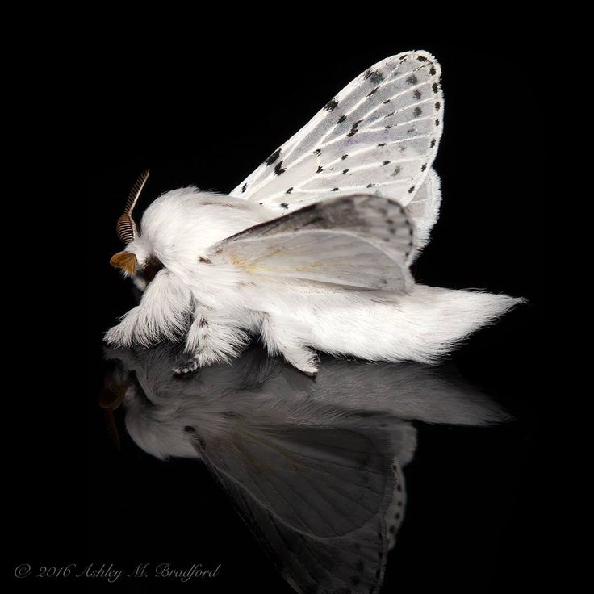
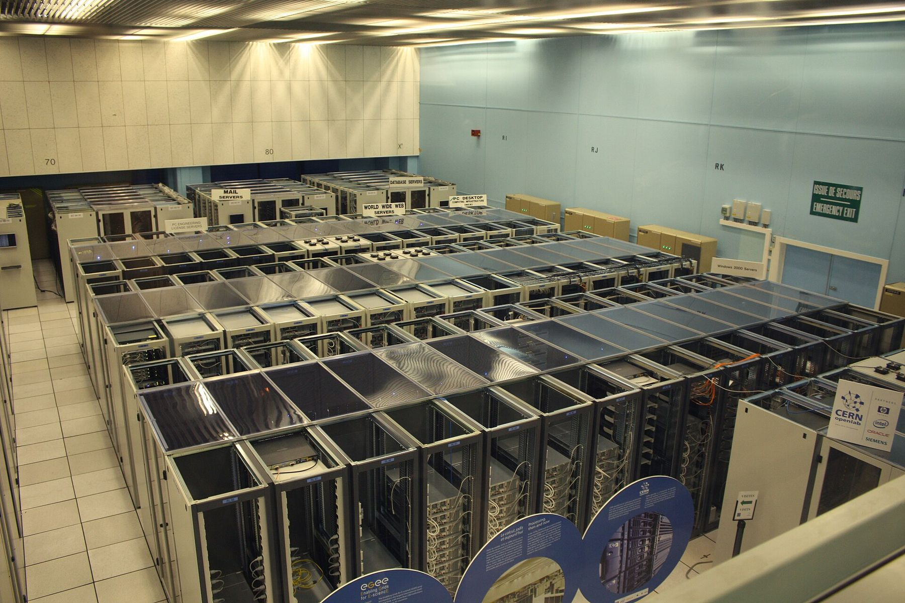
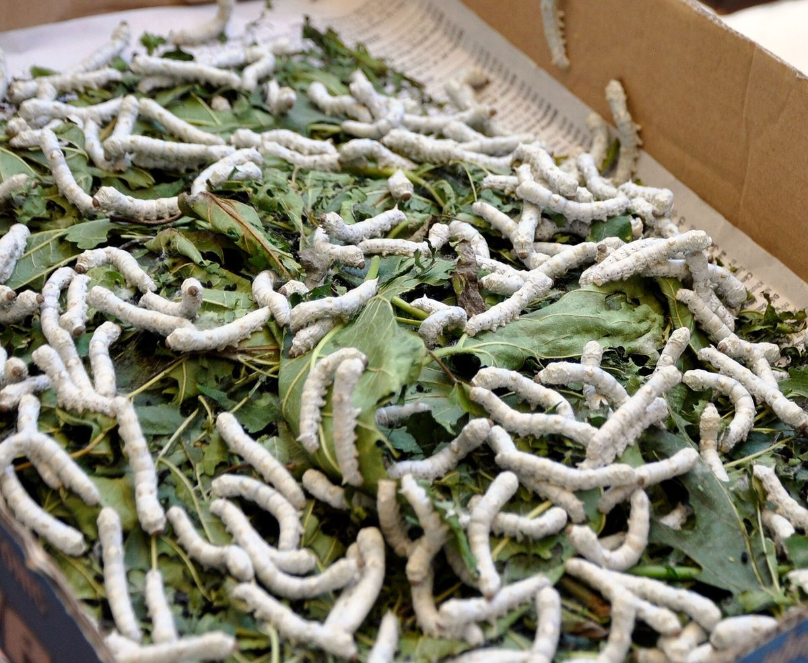
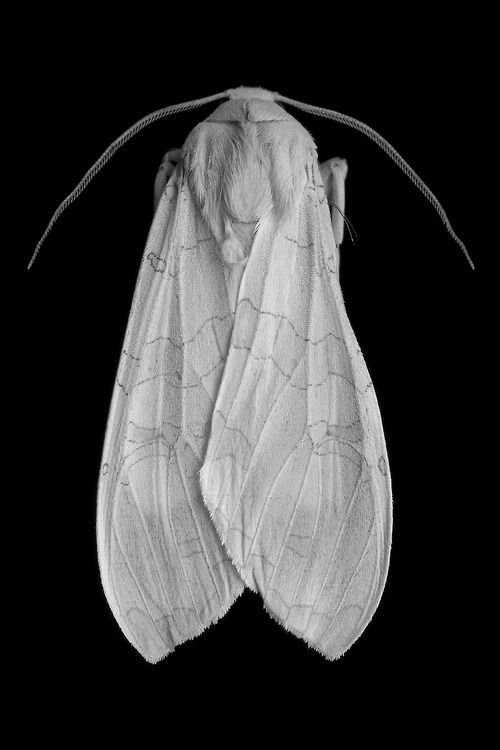

2046
Sericulture
Group 07
FDS2

What if
the silkworm gave the orders?
2046 Sericulture, a speculative pitch by Group 07
The world, 2046
The global economic system is on the brink of collapse.
The cause: rampant exploitation of the planet’s resources, in the name of an unlimited economy.
The world, 2046
Political organizations delegate their powers to AI.
Its task: optimise resource use and rebuild the economy sustainably, in the long term.
The world, 2046
The AI is omniscient.
It monitors the production lines of every sector, and gives each one the directives to follow.
Where
Our story starts in Lombardy, Italy’s historic silk valley.
How to read this pitch
From macro to micro.
Six phases. At each one, power passes to someone smaller.
Phase 01: Breaking point
By 2046, twenty years from now, there will be no more energy to produce.

Phase 02: Handover
So we hand productivity to an AI with one rule: waste nothing.
The agents
In the silk valley, four agents now share the factory.
01Workers
Follow the silkworm’s seasons
02Mulberry
Decides when food exists
03Silkworm
Decides when work happens
04AI
Watches, protects, gives directives
The agents, connected
Three live in a loop, the AI serves it.
Phase 03: Limit, the mulberry
The mulberry comes back, and synthetic feed goes.
TodaySynthetic feed
polluting to produce
2046Mulberry leaves
grown on the tree
Lower cost, less pollution, and the silkworm eats on its own biological rhythm.
Who pays for silk
Today only the silkworm suffers, for 1 km of silk. In 2046, the cost is shared.
Phase 04: Reversal, the machine
The factory starts keeping cocoons warm.

Looms offPower → warmth for the pupae
Phase 05: Turning point, the larva
The larva is no longer boiled. It becomes a moth.
What changes
In the end, the chain of command is flipped.
Phase 06: New rhythm, humans
The new rule: life sets the ceiling of the economy.
So, who is the moth?
The moth leaving the cocoon is us.
Free from nonstop productivity. Back inside the seasons of the living world.

Thank you.
Group 07, Digital & Interaction Design, FDS2